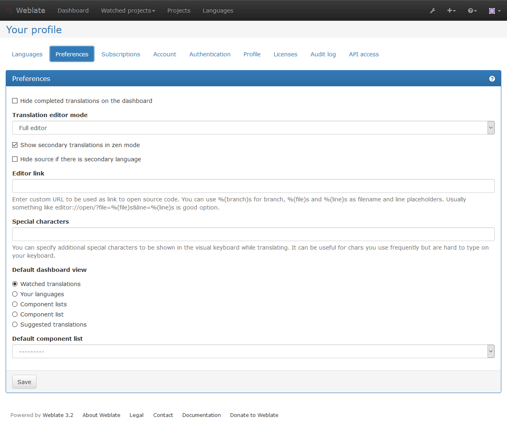
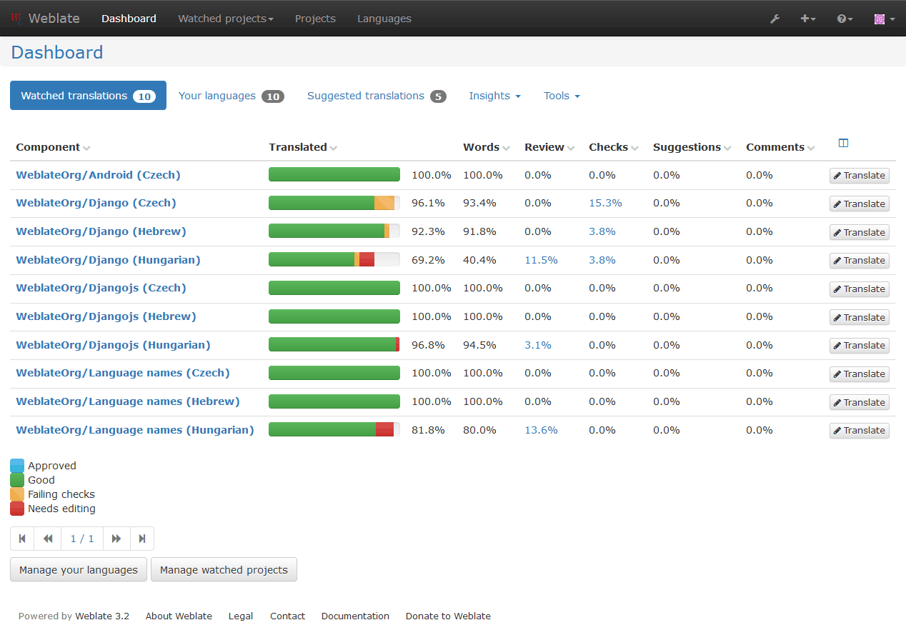
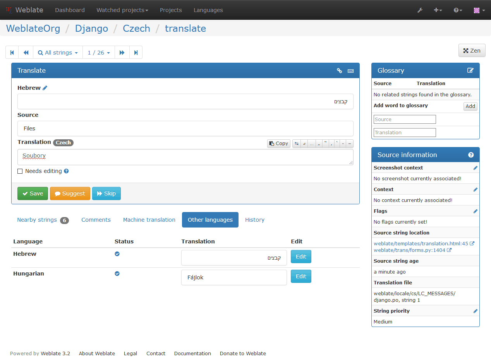
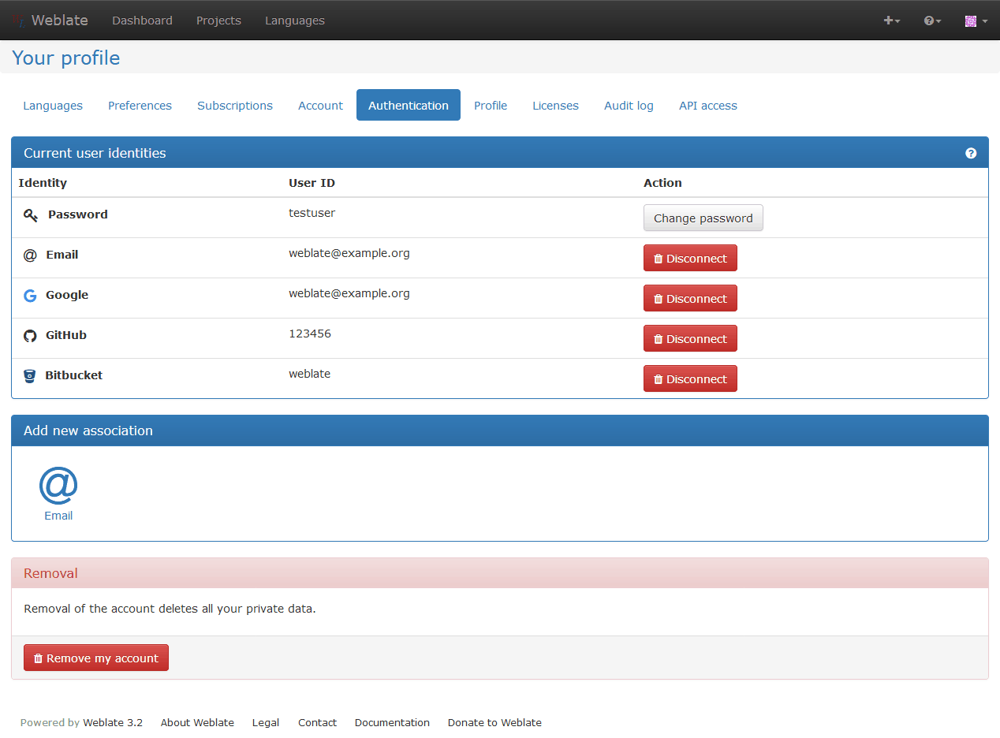

Registration and user profile¶
Registration¶
While everybody can browse projects, view translations or suggest them, only registered users are allowed to actually save changes and are credited for every translation made.
You can register by following a few simple steps:
- Fill out the registration form with your credentials
- Activate registration by following in email you receive
- Possibly adjust your profile to choose which languages you know
Dashboard¶
When you log in to Weblate, you will see an overview of projects and components as well as their translation progress.
バージョン 2.5 で追加.
By default, this will show the components of projects you are watching, cross-referenced with your preferred languages. You can switch to different views using the navigation tabs.
The tabs will show several options:
- All projects will show translation status of all projects on the Weblate instance.
- Your languages will show translation status of all projects, filtered by your primary languages.
- Watched will show translation status of only those projects you are watching, filtered by your primary languages.
In addition, the drop-down can also show any number of component lists, sets of project components preconfigured by the Weblate administrator, see Component Lists.
You can configure your preferred view in the Preferences section of your user profile settings.
User profile¶
User profile contains your preferences, name and email. Name and email are being used in VCS commits, so keep this information accurate.
注釈
All language selections offers only languages which are currently being translated. If you want to translate to other language, please request it first on the project you want to translate.
Translated languages¶
Choose here which languages you prefer to translate. These will be offered to you on main page for watched projects to have easier access to these translations.
Secondary languages¶
You can define secondary languages, which will be shown you while translating together with source language. Example can be seen on following image, where Slovak language is shown as secondary:
Default dashboard view¶
On the Preferences tab, you can pick which of the available dashboard views will be displayed by default. If you pick Component list, you have to select which component list will be displayed from the Default component list drop-down.
Subscriptions¶
You can subscribe to various notifications on Subscriptions tab. You will receive notifications for selected events on chosen projects for languages you have indicated for translation (see above).
If you are an owner of some project, you will always receive some important notifications, like merge failures or new language requests.
注釈
You will not receive notifications for actions you've done.
Authentication¶
On the Authentication tab you can connect various services which you can use to login into Weblate. List of services depends on Weblate configuration, but can include popular sites such as Google, Facebook, GitHub or Bitbucket.
Avatar¶
Weblate can be configured to show avatar for each user (depending on
ENABLE_AVATARS). These images are obtained using
https://gravatar.com/.
Editor link¶
By default Weblate does display source code in web browser configured in the コンポーネント設定. By setting Editor link you can override this to use your local editor to open the source code where translated strings is being used.
You can use %(branch)s for branch, %(file)s and %(line)s as
filename and line placeholders. Usually something like
editor://open/?file=%(file)s&line=%(line)s is good option.
参考
You can find more information on registering custom URL protocols for editor in nette documentation.